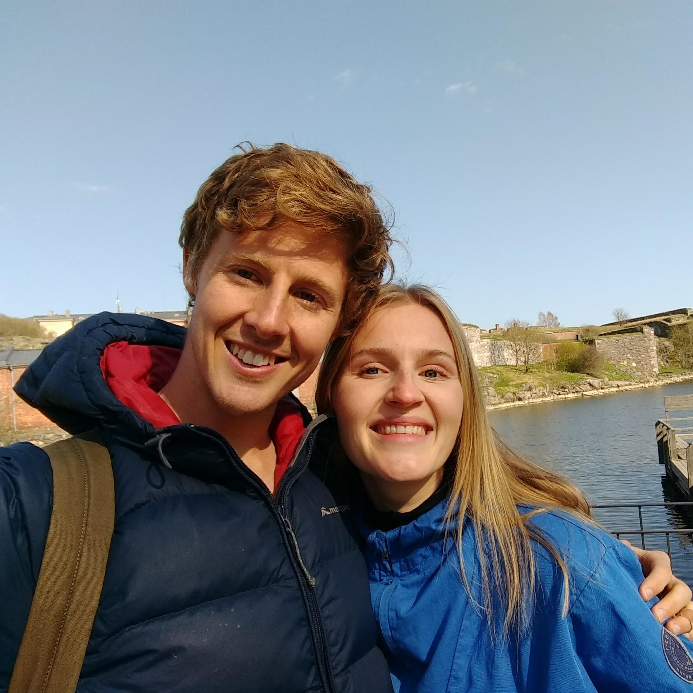

My Approach: Learning Finnish as a Teacher
On the following pages you can find information about Finnish and tips on how to improve your learning or ways to get started.
Welcome to Finnish
Come and meet the Finnish language from the eyes of an English speaker.
Learning Advice
Tips for improving the way you go about learning the Finnish language.
First Steps
A guide to learning the Finnish basics in the easiest and most useful order.
About Me

My name is Andrew. I come from Australia but I'm living in Finland with my girlfriend. I am a high school teacher and a software developer. I have a Masters of Teaching with a specialisation in Teaching English as a Second Language but I also teach IT, Maths and Physics.
I have studied language pedagogy and enjoy learning and teaching languages but I'm not a Finnish teacher, I'm a Finnish learner (approximately B1 level at the moment).
I created this website partly to help others by sharing my learning journey and partly also to practice web development. I hope you find it interesting and feel free to get in touch with feedback via the Contact page.
I have studied language pedagogy and enjoy learning and teaching languages but I'm not a Finnish teacher, I'm a Finnish learner (approximately B1 level at the moment).
I created this website partly to help others by sharing my learning journey and partly also to practice web development. I hope you find it interesting and feel free to get in touch with feedback via the Contact page.